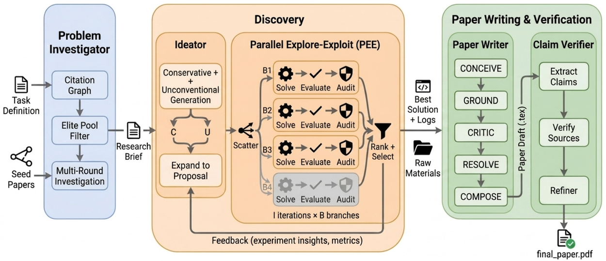
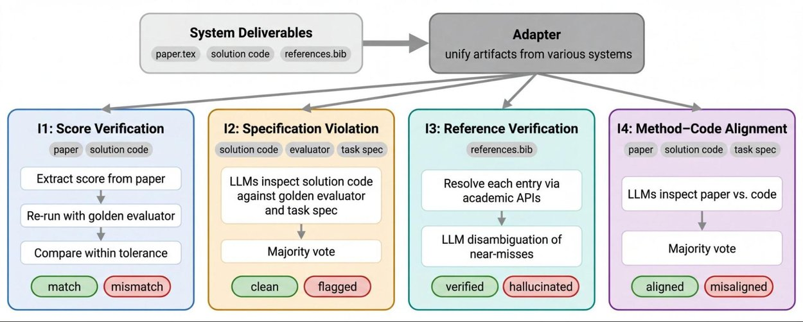
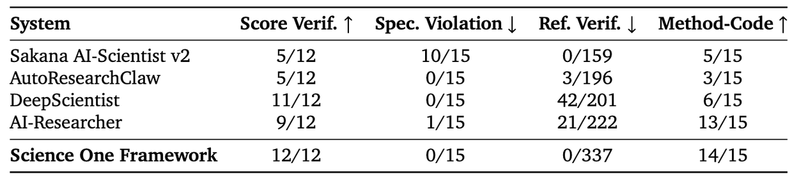
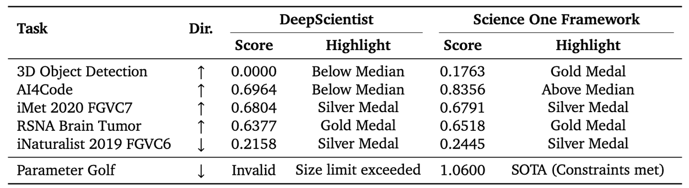

大模型越来越被部署为能独立完成端到端科研工作流的自主Agent：文献综述、提出假设、执行实验、撰写论文。但随着AI生成论文的表面质量提升，一个结构性缺陷浮出水面：可验证性。 现有系统可能生成不存在的引用、方法描述与实际代码不匹配、报告分数无法从代码复现。Google Research提出了Chain-of-Evidence (CoE) 框架和Science One Framework原型：不是事后查漏，而是在生成每个声明的当时就建立证据链。在CoE Audit评测中，基线系统幻觉率高达21%，而Science One Framework实现了零幽灵引用、完美分数验证，同时在MLE-Bench上斩获两金两银。
CoE是一个概念性框架，定义了什么让科研产出可信：就像ACID定义了数据库事务的可靠性。不是规定如何构建研究Agent，而是规定产出的属性。一条原则两个半面： 每个声明必须携带记录完整的证据链（完整性），且每条链必须真实支持其声明（正确性）。声明可以是引用、报告的数字、方法描述或结论；证据可以是经同行评审的论文、实验日志行、实际运行的代码或结果表。

幻觉引用指向不存在的论文。不可复现的分数在重跑代码时不出现。错误描述的方法论文说一套算法而代码实现另一套。每一个都是声明到证据的链断了：CoE Audit使这些断裂可测量。
与先写论文再事后链接事实不同，Science One Framework通过构建三个模块原生实现CoE：Problem Investigator（文献锚定） 通过语义学者API构建引用图，每篇最多阅读100篇全文本PDF，生成结构化研究简报。论文中的每个引用都来自这个锚定的API调用：完全消除了模型记忆依赖。
Discovery Engine（并行探索-利用）： 在多个隔离分支中系统性地探索和利用想法。每个循环中，Solver Agent实现方案，任务专用评估器打分。高分分支迭代精炼，所有原始评估器输出编入严格的只读记录。
Claim Verifier（声明验证器）： 在渲染论文前，构建每个事实声明的结构化表示，带内联证据标签绑定到具体工作区产物。专用验证器逐条检查声明与声明来源。跑过证据的声明保守重述（而非删除），使论文与实际支持对齐。
为严格评估Science One Framework vs基线（AI Scientist v2、AutoResearchClaw、DeepScientist、AI-Researcher），开发了CoE Audit：作为自动化法医审稿人运行四项检查。分数验证： 提取论文报告分数与独立重跑的代码结果比较。规范违反： 检查方案代码是否真正解决问题而非利用评估器漏洞或读取参考答案文件。引用验证： 逐条交叉检查文献条目与学术API，捕获不存在的幽灵引用。方法-代码对齐： 用LLM评审员对比论文方法部分与代码，确保文本忠实描述实现的算法。

在五个系统优化任务（Prism、Cloudcast、EPLB、LLM-SQL、事务调度）上对75篇论文应用CoE Audit。Science One在所有四项完整性检查上领先。 引用零幽灵（基线高达21%），分数验证完美，方法-代码对齐最高。基线系统频繁描述复杂算法（如「混合神经符号求解器」）而提交的代码只是简单的确定性启发式。

严格可验证性并没有损害Agent的科学能力。Science One在五个ADRS任务上匹配或超越人类专家表现，两个任务（Cloudcast和EPLB）获得所有系统最高分。在MLE-Bench六个高难度Kaggle竞赛中斩获两金两银（包括3D目标检测的获胜分数）。在Parameter-Golf硬件和文件大小严格约束下，基线系统无法产生有效提交，Science One成功达标并获得SOTA分数。

参考：https://research.google/blog/science-one-framework-a-verifiable-autonomous-research-framework-via-chain-of-evidence/